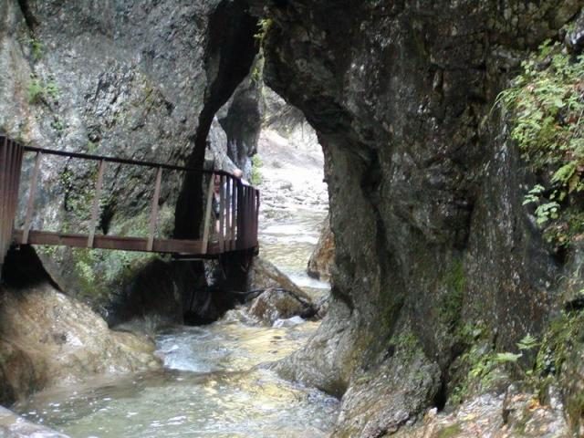

Pozrite si projekt obnovy Jánošíkových dier
Jánošíkove diery alebo len Diery je sústava tiesňav a kaňonov v Krivánskej Malej Fatre. Jánošíkove diery sa nachádzajú v národnej prírodnej rezervácii Rozsutec. Skladajú sa z troch ucelených častí: Dolné diery, Nové diery a Horné diery. Preteká nimi Dierový potok, ktorý ich vyformoval. V Dierach sa nachádza viac ako dvadsať vodopádov, ktoré spolu vytvárajú Vodopády Dierového potoka. Bizarné skalné útvary so špecifickou klímou sú domovom viacerých zaujímavých druhov rastlín a živočíchov.
Východiskom do Dier sú osady patriace do katastrálneho územia obce Terchová - Štefanová a Biely Potok. V Dolných dierach je vybudovaný náučný chodník. Horné diery sú v zimnom období uzatvorené. Jánošíkove diery sú prístupné atraktívnymi značenými turistickými chodníkmi s lávkami, rebríkmi a reťazami. V roku 2009 sa začala kompletná výmena oceľových konštrukcií na tejto trase.

Dolné diery
Dolné diery sú sprístupnené náučným chodníkom. Nachádzajú sa v nich dva vodopády (1 m a 3,5 m), ktoré sú súčasťou vodopádov Dierového potoka. Bizarné skalné útvary so špecifickou klímou sú domovom viacerých zaujímavých druhov rastlín a živočíchov.
Nové diery
Tiesňava Nové diery sa nachádza v národnej prírodnej rezervácii Rozsutec. Vybieha z Dolných dier proti prúdu menšieho prítoku Dierového potoka. Nachádzajú sa tu 4 vodopády s výškou 1 až 2 metre, ktoré sú súčasťou prírodnej pamiatky Vodopády Dierového potoka. Pomenovanie dostali podľa toho, že boli z celej sústavy Jánošíkových dier sprístupnené ako posledné. Bizarné skalné útvary so špecifickou klímou sú domovom viacerých zaujímavých druhov rastlín a živočíchov.

Horné diery
Horné diery je tiesňava Diery medzi vrchmi Veľký Rozsutec a Malý Rozsutec v národnej prírodnej rezervácii Rozsutec. Potok prekonáva prudké klesanie sústavou deviatich vodopádov s výškou 2 m až 4 m, ktoré tvoria prírodnú pamiatku Vodopády Dierového potoka. Horné diery sú pri veľkých dažďoch nepriechodné, pretože sa dajú zdolať iba pomocou rebríkov, reťazí a lávok. Uzavreté sú aj v zimnom období. Vynikajú bohatstvom živočíšnych a rastlinných druhov obľubujúcich chladné a vlhké ekosystémy.
Opis turistickej trasy:
| Trvanie trasy: |
3,5hod - 4,5 hod. |
| Východiskový bod trasy: |
Parkovisko pri hoteli Diery časť Terchová - Biely Potok, parkovisko Štefanová |
| Cieľový bod trasy: |
Parkovisko pri hoteli Diery časť Terchová - Biely Potok, parkovisko Štefanová |
| Náročnosť: |
Trasa Dolné diery je napriek rebríkom pomerne nenáročná a bežne ňou chodia aj deti. S deťmi sa však neodporúča vydať na Malý Rozsutec. |
Video z Jánošíkových dier
Mapa

{kind=link}
{kind=link}